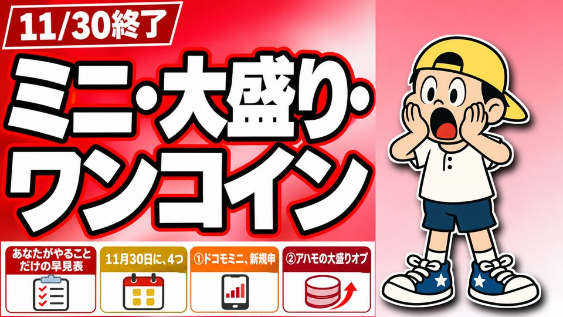
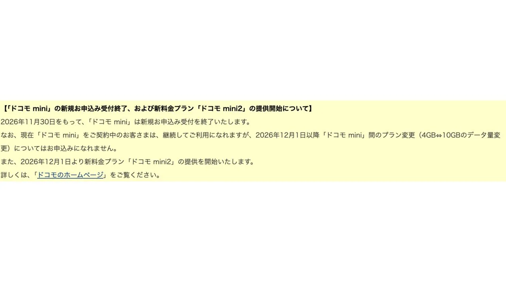
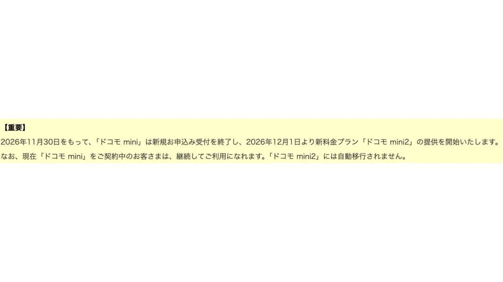
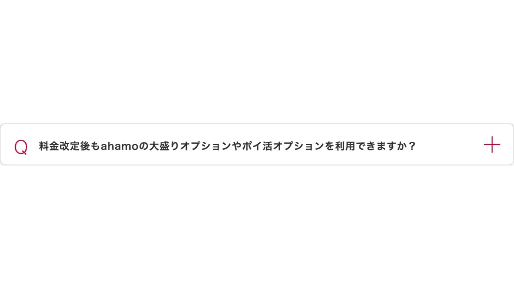
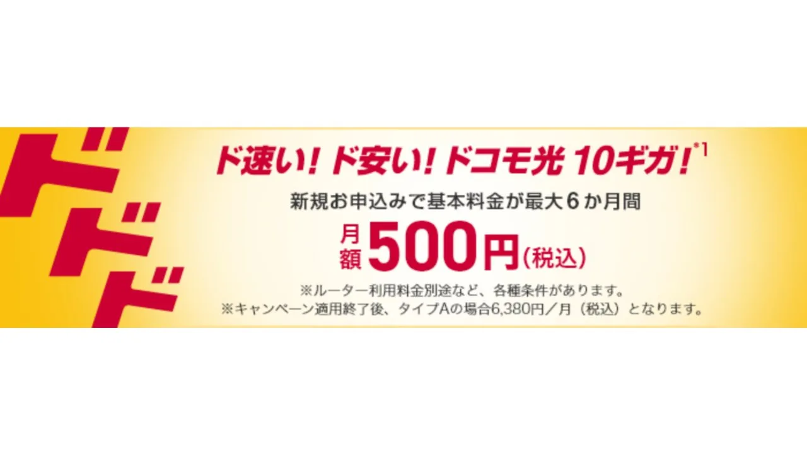
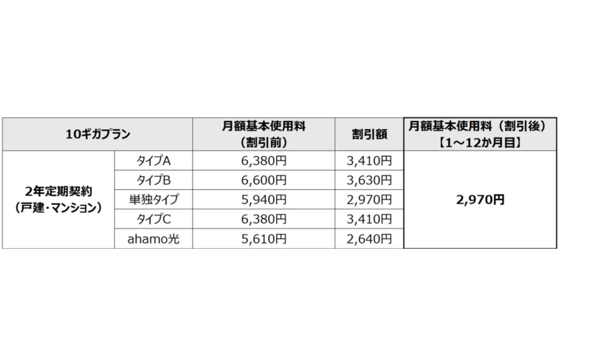
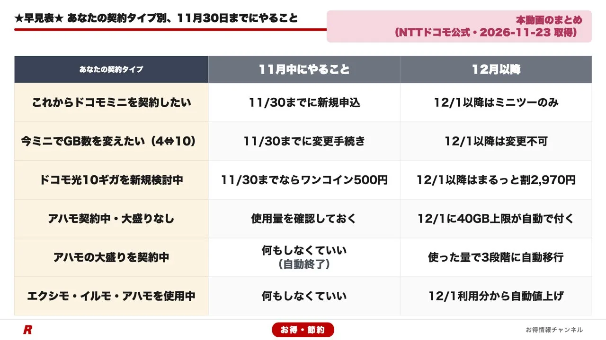

ドコモは2026年11月30日に、3つの施策を同時に終了します。「ドコモmini」の新規申込、「ahamo大盛り」オプション、そしてドコモ光・ahamo光の「ワンコイン」キャンペーンです。翌12月1日からは、エクシモ・イルモ・ahamoなど旧プランの月額料金も自動で改定されます。2026年11月23日時点の公式情報をもとに、契約タイプ別に「11月中にやること」だけをまとめました。

▶ この記事の内容を動画で見る（お金の総合チャンネル）0111月30日に終わる3つ、12月1日に自動で変わる1つ

ドコモ公式のお知らせには、「2026年11月30日をもって、ドコモminiは新規お申込み受付を終了し、12月1日より新料金プラン『ドコモmini2』の提供を開始します」とまとまっています。同じ11月30日に、ahamoの「大盛りオプション」と、ドコモ光・ahamo光の「ワンコイン」キャンペーンも終了します。
| 日付 | 起きること | 関係する人 |
|---|---|---|
| 2026年11月30日（月） | ドコモmini新規申込の受付終了 | これからminiを選ぶ人 |
| 2026年11月30日（月） | ahamo大盛りオプションの提供終了 | 大盛り契約中の人 |
| 2026年11月30日（月） | ドコモ光・ahamo光ワンコインの終了 | 10ギガへの新規申込を考えている人 |
| 2026年12月1日（火） | 旧プラン中心に月額料金を改定 | eximo・irumo・ahamoを使う人 |
自分で動く必要があるのは、上の表のうち「ドコモmini新規申込」と「ワンコイン」の2つだけです。 大盛りの終了と値上げは、どちらも手続き不要で自動的に進みます。
02①ドコモmini：新規申込は11月30日まで、既存契約者は自動移行なし
ドコモ公式FAQには「現在ドコモminiをご契約中のお客さまは、継続してご利用になれます。ドコモmini2には自動移行されません」とはっきり書かれています。

つまり、今miniを使っている人は何もしなければそのままminiが続き、料金も変わりません（miniは12月1日の値上げの対象外です）。変わるのは、自分でmini2への変更を申し込んだときだけです。
ただし、今のminiの契約者にも11月30日までに確認しておきたい点が2つあります。1つは、miniの中での4GB⇔10GBのデータ量変更が12月1日以降はできなくなること。もう1つは、「データ増量おためしキャンペーン」の終了で、4GB契約の人が使えていた6GB（10GB契約なら12GB）が、12月から本来の4GB・10GBに戻ることです。毎月のデータ使用量がこのキャンペーン分に頼っている人は、11月中にMy docomoで使用量を確認しておくと安心です。
03②ahamo大盛り：11月30日で自動終了、手続きは不要

ahamoの「大盛りオプション」は2026年11月30日に提供終了し、契約中の人は解約手続きなしで自動的に契約が終わります。12月1日からのahamoは、使った量に応じて40GBまで3,135円・60GBまで4,125円・120GBまで5,115円（いずれも税込）の3段階制になります。
ここで注意が必要なのは、大盛りを契約していない人です。2026年11月1日時点でahamoを契約していて、かつ大盛りを契約していない人には、上限40GBの「上限設定オプション」が12月1日に自動で設定されます。 この上限はahamoアプリかMy docomoから自分で解除できますが、知らずにいると40GBを超えた時点で速度制限がかかります。
04③ドコモ光・ahamo光「ワンコイン」：11月30日まで500円、12月からは「1年まるっと割」
ここが今回いちばん見落とされやすいポイントです。ドコモ光10ギガには、基本料金が最大6か月間、月額500円になる「ワンコインキャンペーン」があります。このキャンペーンの期間は2024年8月29日から2026年11月30日までで、11月30日の申込をもって終了します。

キャンペーン適用期間が終わると、通常の基本料金（タイプAで月6,380円）に戻りますが、これは「自分の適用期間が終わったとき」の話であり、12月以降に料金が全員一斉に上がるという意味ではありません。

そして12月1日からは、新しいキャンペーン「ドコモ光／ahamo光 10ギガ 1年まるっと割」が始まります。12月1日以降に新規・光回線再利用・転用・事業者変更のいずれかで申し込むと、基本料金から月額最大3,630円引かれ、最大12か月目まで月額2,970円になります（2年間の定期契約が条件）。終了時期は未定で、詳細サイトは2026年12月1日午前0時に公開予定です。
注意ドコモ光10ギガをこれから申し込むなら、11月中に申し込めばワンコインの500円、12月以降に申し込めばまるっと割の2,970円が適用されます。今すでにドコモ光を契約している人には、どちらも関係ありません。
05契約タイプ別の早見表

| あなたの契約タイプ | 11月中にやること | 12月以降 |
|---|---|---|
| これからドコモminiを契約したい | 11/30までに新規申込 | 12/1以降はmini2のみ |
| 今miniでGB数を変えたい（4⇔10） | 11/30までに変更手続き | 12/1以降は変更不可 |
| ドコモ光10ギガを新規検討中 | 11/30までならワンコイン500円 | 12/1以降はまるっと割2,970円 |
| ahamo契約中・大盛りなし | 使用量を確認しておく | 12/1に40GB上限が自動で付く |
| ahamoの大盛りを契約中 | 何もしなくていい（自動終了） | 使った量で3段階に自動移行 |
| eximo・irumo・ahamoを使用中 | 何もしなくていい | 12/1利用分から自動値上げ |
06まとめ
- 11月30日に終わるのは、ドコモmini新規申込・ahamo大盛り・ドコモ光ワンコインの3つ
- 12月1日に自動で変わるのは、eximo（+550円）・irumo（+330円）・ahamo（+165円）の値上げ（手続き不要）
- ドコモmini・mini2は、この値上げの対象外
- 自分で動く必要があるのは、これからミニに申し込む人と、ワンコインに申し込む人だけ
- 迷ったら、11月30日より前に動いておくのが安全
契約タイプ別の判断の流れは、動画でも詳しく解説しています。
07よくある質問
ドコモminiを今使っていますが、何かしないといけませんか？
既存の契約者がそのままminiを使い続ける分には、何も手続きは必要ありません。mini2への自動移行もなく、料金も変わりません。
ahamoの大盛りオプションは、自分で解約した方がいいですか？
いいえ、何もしなくて大丈夫です。2026年11月30日をもって自動的に契約が終了します。
ドコモ光のワンコインが終わったら、今より料金が上がりますか？
今すでにワンコインを適用して契約している人は、ご自身の適用期間（最大6か月）が終わったタイミングで通常料金に戻ります。12月1日の制度変更によって急に値上がりするわけではありません。
eximoやirumoは、もう新規で申し込めないのですか？
はい。eximo・irumo・eximoポイ活はすでに新規申込を終了しており、現在は既存契約者だけが利用できるプランです。12月1日の値上げは、その既存契約者に自動で適用されます。